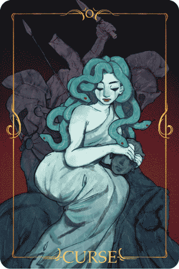
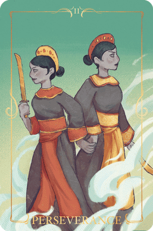
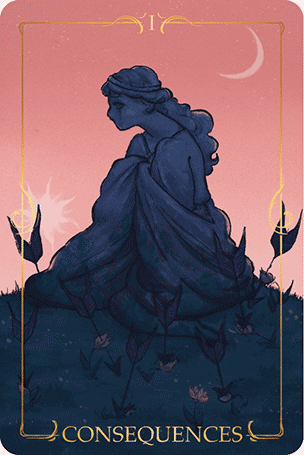

I created the final products based off of their monuments as well as my interpretation of their stories.

I based Medusa's demeanor and expression off of her monument, she's distressed at her situation and even attempts to "sheild" a petrified warrior from her
predicament. Personally, I grew up with the interpretation of Medusa being a victim of her "blessing", so I decided to reflect that in the colour pallete,
Medusa is pure, symbolized by the bright teals yet her situation is far from pure, it is something she is constantly surrounded by, a fate she has ultimately accepted,
portrayed by her sitting atop her the petrified bodies of fallen warriors sent to slay her.

The Trung Sister's Pose is also based off of their monument, however I ended up having them hold hands to portray their strong bond. Their story is still celebrated today
moreover, many people claim that Vietnam, would not exist without their rebellion. I ended up using more saturated and lighter colours because of this, despite their more thrilling and ultimately
tragic story, I wanted to depict how their tale is seen as awe inspiring, and a herioc feat.

You might have noticed by now that all of their poses or experssions are inspired by their monument counterparts, Niobe is no different,
however I interpreted the grassy hill as a cloak she is clutching around herself, to shelter her from the horrific consequences of her actions.
I used cool and warm tones to draw the eye to Niobe, framing her in a pink sunset, moreover I wanted to also capture that juxtaposition between the beautiful scenery
and tragic tale so it all came together nicely.